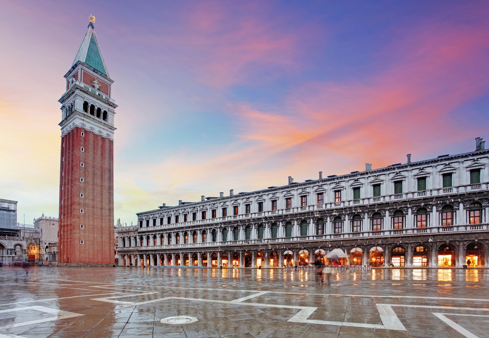
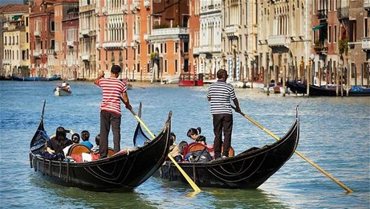
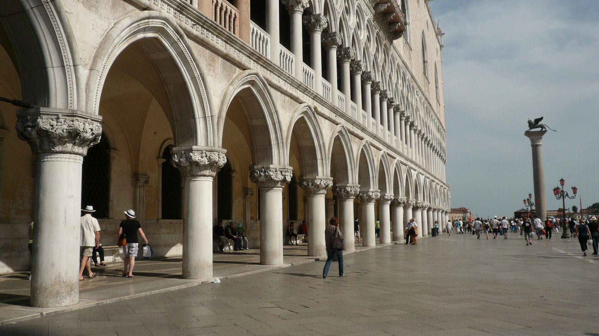

Venetië ligt in het noordoosten van Italië. De stad is bekend van haar historische centrum en vele kanalen. De stad bestaat uit ruim honderdvijftig kanalen en honderden bruggetjes. De vele autovrije straatjes en steegjes in Venetië zorgt voor één grote ontdekkingsreis, waarbij je prachtige plekjes, winkels en barretjes tegenkomt. Venetië staat natuurlijk ook vooral bekend vanwege de kenmerkende bootjes die toeristen door de vele kanalen voeren. Venetië is eigenlijk een groot openluchtmuseum geworden.
Bezienswaardigheden:
- De Campanile
De Campanile van Venetië is een vrijstaande klokkentoren op het Piazza San Marco. De 98 meter hoge toren is lang niet zo oud als de andere bebouwing op het San Marcoplein. De toren stamt uit het jaar 1912. De huidige toren is voorzien van een lift die je binnen ongeveer een minuut naar het uitzichtpunt op zestig meter hoogte brengt. Vanaf het uitzichtpunt heb je een uitzicht van 360 graden. Overdag is er regelmatig een wachtrij om naar boven te gaan, dus wees optijd.
- De Gondels
De gondels zijn niet echt bezienswaardigheden, maar het is hartsikke leuk om gedaan te hebben als je in Venetië bent geweest. Het is echt iets typisch van Venetië. De gondola’s, zoals ze in Italië heten, zijn vaartuigen die gebruikt worden voor het vervoeren van mensen en goederen door de waterwegen van Venetië. De Venetiaanse gondels zijn naar schatting al zo’n duizend jaar geleden geïntroduceerd in Venetië. Opmerkelijk voor de gondels is dat ze slechts door één roeier bezuurd worden. Ze vormen voor toeristen één van de populairste attracties. De gemiddelde prijzen liggen rond 80 euro voor 40 minuten en 120 euro voor een uur.
- Het dogenpaleis
Het dogenpaleis was vroeger het paleis van de doge, de leider van de toenmalige Republiek Venetië. Het dogenpaleis ligt aan het San Marcoplein en behoort tot de meest belangrijke en indrukwekkende niet-religieuze gotische bouwwerken van Italië. Het paleis is tussen 1309 en 1424 gebouwd. Tegenwoordig wordt Venetië niet meer bestuurd door dogen. Het dogenpaleis is nu een bezienswaardigheid waar je als toerist je kunt verwonderen over fraaie architectuur, de bijzondere kunstwerken en de prachtige vertrekken. Erg indrukwekkend is ook de rondleiding door de gevangenis. Wie een entreekaartje koopt voor het dogenpaleis die mag met dat ticket ook de andere musea aan het San Marcoplein bezoeken.
